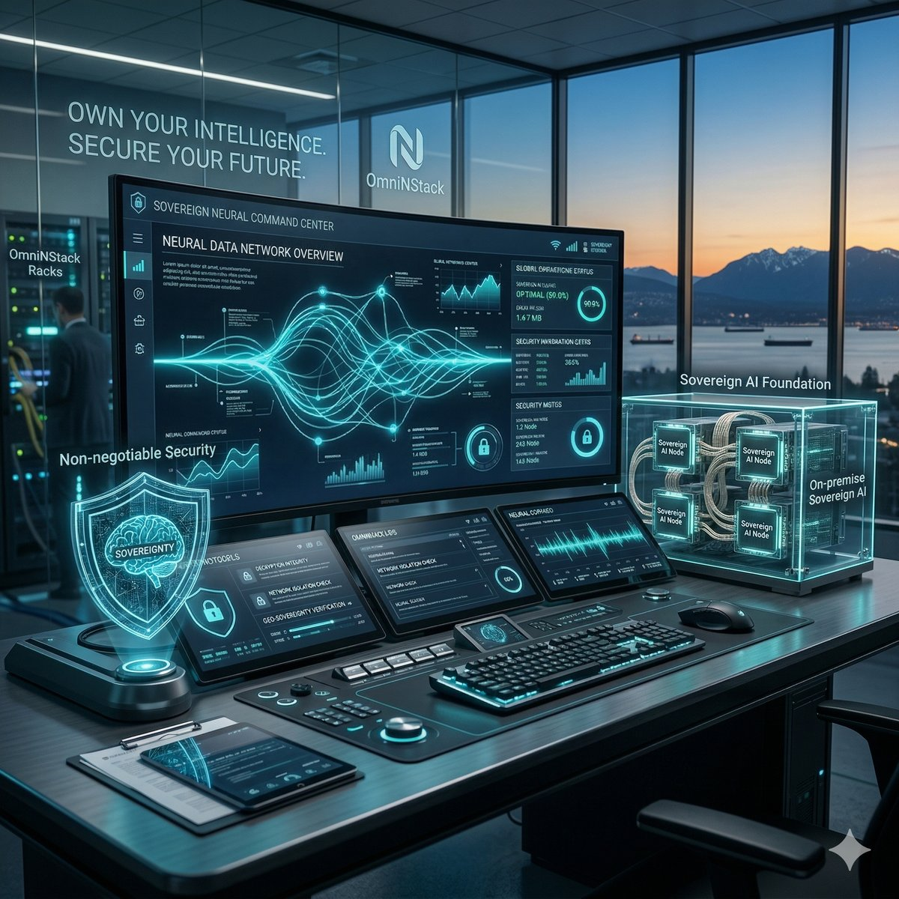

Trust & Safety
AI Solutions
OmniNStack builds and services AI platforms grounded in hyper-local community knowledge.
Shared AI infrastructure — orchestration, retrieval, and governance — powers a growing portfolio of focused SaaS platforms, starting with Outward, our AI Customer Engagement Platform, and Contexa, our AI Trust & Safety Platform. Both run end-to-end on infrastructure you own, with absolute data sovereignty and zero vendor lock-in.

Proprietary Sovereign Stack
Public + Private LLM Gateway
Citation-Backed Agentic RAG
Identity-Aware Audit Trail
The Product Portfolio
Our Products, One Shared AI Platform
OmniNStack is a platform company: a shared AI infrastructure layer — LLM gateway, agent orchestration, RAG, and governance — powers a growing portfolio of enterprise AI products, starting with these two.
Outward
AI Customer Engagement Platform
Two modules, one platform: Outward Studio for AI copywriting and social content, Outward Chat for omnichannel messaging and offline POS attribution that connects digital campaigns to measurable in-store revenue.
Explore Outward →Contexa
AI Trust & Safety Platform
Built to catch cyberbullying and harassment as they happen — context-aware detection with real-time risk scoring and an explainable, fully-logged audit trail for every moderation decision.
Explore Contexa →Industries We Serve
Built for High-Trust Enterprises
Outward and Contexa are already deployed against real customer engagement and Trust & Safety problems across these verticals.
Retail & Franchise
Customer engagement, coupon marketing, and POS integration that ties every campaign to in-store revenue.
Digital Commerce
Marketing automation, omnichannel messaging, and CRM workflows that keep customer conversations in one system.
Gaming
Cyberbullying and harassment detection for in-game and open chat — real-time moderation and community protection at scale.
Government
Citizen engagement, content moderation, and compliance workflows built for public-sector accountability.
Financial Services
AI assistants, risk monitoring, and compliant customer communication for regulated institutions.
Healthcare
Patient engagement, appointment reminders, and knowledge assistants — without PHI ever leaving your network.
The Platform
One Platform to Deploy Your AI Workforce
Everything you need to put AI-powered teams to work — orchestration, knowledge, automation, and analytics in one proprietary system.
Multi-Agent Orchestration
Compose teams of autonomous AI agents that plan, delegate, and coordinate to complete real work — the cognitive engine that turns one instruction into an end-to-end operation.
Enterprise Knowledge Retrieval
A sovereign knowledge base that turns fragmented data into high-fidelity, citation-backed answers your agents can act on — without data ever leaving your network.
Workflow Automation
Automate repetitive, multi-step operations across your systems. A multi-model gateway routes each task to the right public or private LLM, with zero vendor lock-in.
Analytics & Audit
A live dashboard for every AI-powered team — measure throughput and outcomes, with immutable, identity-aware audit trails on every action agents take.
How It Works
From Repetitive Work to AI-Powered Teams
OmniNStack is the platform for enterprises that can't send their data to the cloud. You bring your data and workflows; the platform deploys AI agents that run them — entirely on infrastructure you own.
Connect Your Data
Ingest documents, databases, and live systems into a sovereign knowledge base — nothing ever leaves your network.
Configure Agents
Define the workflows you want automated and the policies they must follow. The platform assembles agents governed by Policy-as-Code.
Deploy AI Teams
Autonomous agents run repetitive work end-to-end — researching, drafting, routing, and acting across your systems in real time.
Audit Everything
Every action is logged with immutable, identity-aware auditing and citation-backed outputs you can trust and verify.
Technical Architecture
The Five-Layer Sovereign Stack
Presentation Layer
Unified Command Center for human-AI collaboration. Featuring Open WebUI, LibreChat, Outward Chat Interfaces, and native IDE Plugins for seamless dev-to-production workflows.
Governance Layer
Deterministic security using Policy-as-Code (OPA) and Immutable Identity-Aware Auditing. Non-negotiable data sovereignty and compliance enforcement.
Orchestration Layer
Cognitive "nervous system" managing Agentic Reasoning, Outward Omnichannel Routing, and Industrial AIoT Bridging—integrating real-time POS transactions and telemetry into decision loops.
Data Layer
Knowledge base with Sovereign RAG, secure Vector Stores, and a private object repository with semantic consistency checking.
Infrastructure Layer
Self-hosted hardware-agnostic foundation. Optimized for NVIDIA TensorRT / Apple MLX for server-grade inference on Edge and Air-Gap nodes.
Proprietary Innovation
Built on Original Research
OmniNStack is a product company. Our edge is technology we engineer ourselves — solving hard problems that off-the-shelf AI cannot, so the platform runs autonomously inside sovereign enterprises.
Agent Coordination Engine
A proprietary multi-agent orchestration framework that lets autonomous agents plan, delegate, and self-correct reliably across long-running enterprise workflows.
Sovereign Memory & Retrieval
Original AI memory architecture and sovereign retrieval systems that deliver high-fidelity, citation-backed knowledge entirely on-premise — no cloud, no leakage.
Edge Inference Optimization
Inference methods tuned for NVIDIA TensorRT and Apple MLX that bring server-grade model performance to edge and sovereign hardware most platforms can't run on.
Validated at Scale
Our sovereign retrieval stack has been stress-tested end-to-end against a real 267,000-item Korean-language corpus — crawl, cleanup, document normalization, and vector embedding — grounding natural-language answers correctly outside English-language enterprise messaging and moderation.
What's Next on the Platform
Building the Enterprise AI Platform for the Next Decade
Today, one shared AI platform powers a growing portfolio, starting with Outward and Contexa. Tomorrow, the same infrastructure extends into these high-trust verticals — a product roadmap, not a handful of disconnected applications.
Outward · Contexa
Compliance · Healthcare · Manufacturing · Security · Government
Gov & Public Sector
Agents that automate zoning review, legislative analysis, and public-record synthesis — with pixel-perfect citations.
Healthcare Systems
Agents that automate clinical inference and administrative workflows — without PHI ever leaving your network.
Physical AI & Industrial
Agents that drive physical assets, edge robotics, and real-time analytics across industrial and resource sectors.
AI Compliance
Agents that monitor regulated communications and workflows against policy, with a fully-logged, defensible audit trail.
Leadership Team
The Minds Behind OmniNStack
June Hong
Chief of Technology Officer, Co-founder
A seasoned Software Architect and Technical Leader with over 20 years of experience spanning embedded systems, cloud-native platforms, and AI-driven cyber-physical systems. June leads the engineering of OmniNStack's proprietary AI Operations Platform, applying a track record built at global technology leaders such as Samsung, NTT, and NEC. His work focuses on the agentic orchestration core that lets autonomous AI teams run enterprise workflows end-to-end, bridging software orchestration with Edge and Physical AI.
Hyunseung Lee
Principal Software Engineer & AI Scientist, Co-founder
A cross-disciplinary engineer specializing in the integration of advanced software orchestration with next-generation Physical AI hardware. Hyunseung builds the production-grade agentic and RAG systems at the heart of OmniNStack's platform — using LangGraph, Retrieval-Augmented Generation (RAG), and LangChain to turn the product into a robust, infrastructure-agnostic operating system for high-trust enterprise environments.
Joseph S. Yu
Ph.D., Principal Hardware Engineer & Physical AI Architect, Co-founder
An AI Architect with strategic expertise across the South Korea–North America technology corridor. Joseph drives the hardware and go-to-market strategy for OmniNStack's AI Operations Platform, leveraging deep insight into regional innovation ecosystems to expand the product across borders through technology alignment and market growth.
Built in Canada
Designed for Global Enterprises
OmniNStack is developing enterprise AI infrastructure from British Columbia, Canada, helping organizations deploy secure, scalable, and explainable AI platforms for customer engagement and digital trust.
Intelligence is most powerful when it is owned.
OmniNStack is the AI Solutions Company behind Outward and Contexa — turning repetitive work into autonomous AI-powered teams, running on infrastructure you own, where organizational autonomy is guaranteed.
Contact Our Solutions Architects